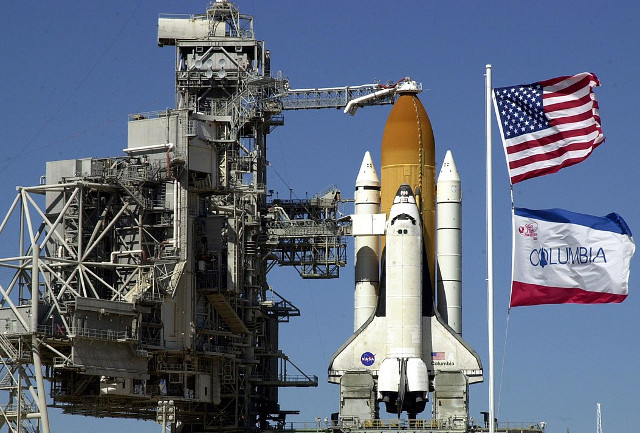

12 апреля 1981 года состоялся запуск многоразового космического корабля Колумбия. Космический шаттл НАСА стал первым в мире космическим кораблем многоразового использования. Он стартовал как ракета и вернулся на Землю как планёр. Он был спроектирован для доставки на орбиту различных больших грузов, таких как спутники, и, при необходимости, для их обратного отправления на Землю.
- Первый полет - Колумбия STS-1: 12 апреля 1981 – 14 апреля 1981;
- Последний полет - Колумбия STS-107: 16 января 2003 – 1 февраля 2003;
- Колличество миссий - 28;
- Человек в составе - 160;
- Время, проведенной в космосе - 300 дней 17:40:22;
- Оборотов вокруг Земли - 4,808;
- Преодоленная дистанция - 201,497,772 км;
